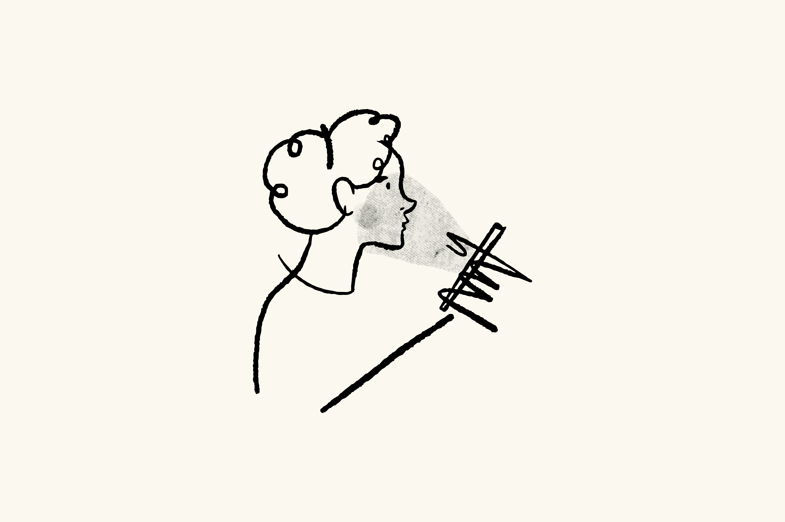

Bienvenue sur mon portfolio !
Développeur Front-End passionné, j'allie la rigueur de mon passé de manager à mon exigence pour un code propre et structuré. Ce portfolio 100% sur mesure (HTML, CSS, Tailwind) illustre mon sens du détail. Que vous cherchiez un collaborateur de confiance pour donner vie à vos projets web ou le nouveau talent de votre équipe, je mets ma logique à votre service.
En savoir plus
Mes projets {Graphiques}
De la conception structurelle au design final, découvrez mes réalisations visuelles. J'aborde la création avec une extrême rigueur, où chaque proportion, chaque espace et chaque ligne répondent à une intention précise.

Mes projets {Web}
De l'assemblage CMS à l'artisanat du code. Découvrez mes premières réalisations interactives sous WordPress, ainsi que ma transition vers le développement sur mesure, illustrée par ce portfolio 100% fait main en HTML, CSS et JS.
Mon Curriculum Vitae
Un parcours exigeant au service de la tech. Découvrez comment la gestion du stress, la direction d'équipe et la rigueur technique nourrissent aujourd'hui ma logique et ma méthode en tant que développeur.
Me découvrir